Tops 10 animes de comedia
¡Bienvenidos, amantes del anime y la comedia! Si eres de los que disfrutan de un buen momento de risa y entretenimiento mientras ves tus series favoritas, este blog es para ti. En el mundo del anime, los géneros son tan diversos como las historias que cuentan, pero hay uno que siempre tiene un lugar especial en nuestros corazones: ¡la comedia! Desde situaciones absurdas hasta bromas de todo tipo, los animes de comedia nos han dado algunos de los momentos más memorables y divertidos.
En esta lista, exploraremos los 10 mejores animes de comedia que han logrado hacernos reír a carcajadas con sus personajes únicos, situaciones hilarantes y giros inesperados. Si buscas algo para aliviar el estrés del día o simplemente disfrutar de un buen rato, estas series son perfectas para ti. Así que prepárate para descubrir los animes que no solo te harán reír, sino que también te dejarán con una sonrisa de oreja a oreja. ¡Empecemos!
Top 10 Great Teacher Onizuka
Sinopsis: Eikichi Onizuka es un ex-gangster y profesor de secundaria que utiliza métodos poco convencionales para enseñar a sus alumnos. A pesar de su comportamiento rebelde, él es un personaje que se preocupa profundamente por el bienestar de sus estudiantes.
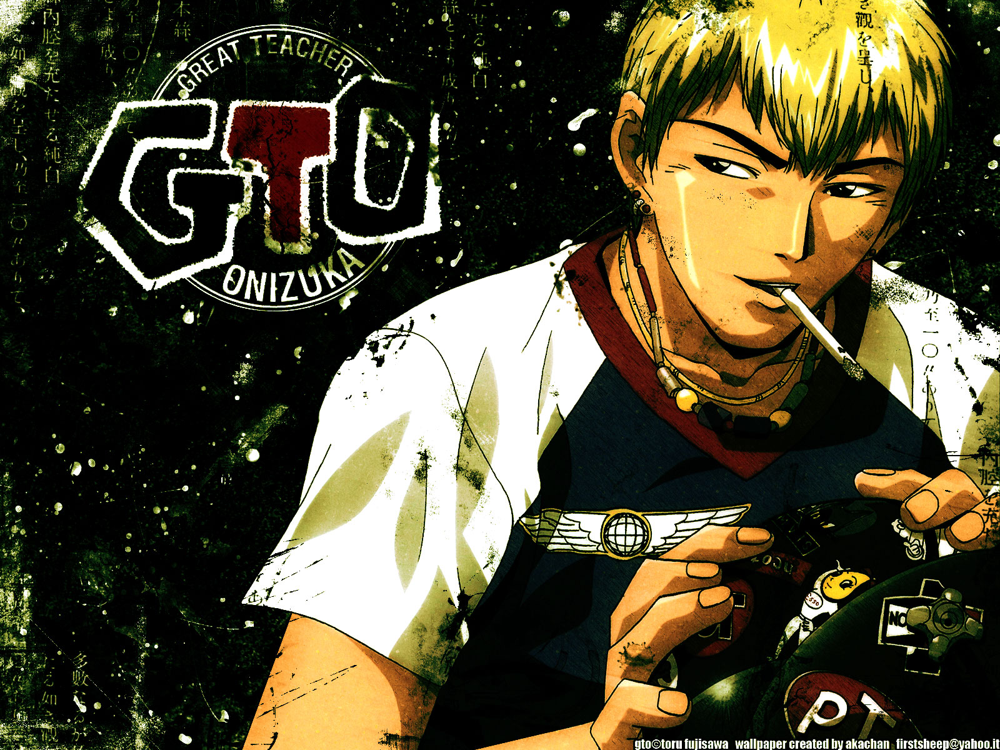Top 9 - Ouran High School Host Club
Sinopsis: Haruhi Fujioka, una estudiante becada en la prestigiosa escuela Ouran, se une al club de anfitriones para pagar una deuda que involucra a un grupo de chicos ricos y guapos. El enredo que se desarrolla en este club de chicos guapos se llena de situaciones cómicas y románticas.
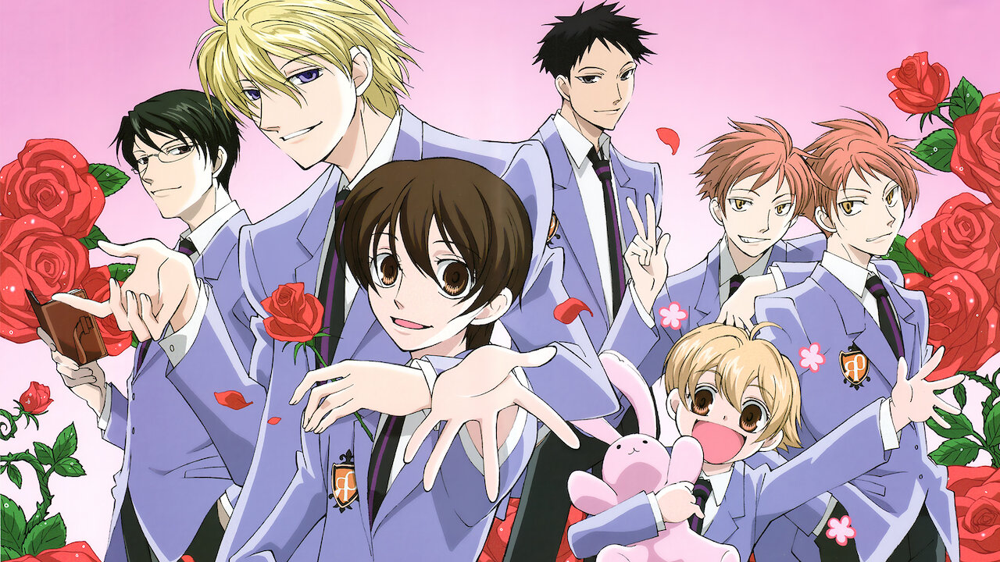Top 8 - Lucky Star
Sinopsis: Lucky Star sigue las vidas de un grupo de chicas de secundaria que pasan el tiempo hablando sobre la cultura otaku, la vida escolar y todo tipo de temas triviales.

Top 7 - Prison School
Sinopsis: En una escuela para chicas, cinco chicos son los únicos estudiantes varones. Tras ser atrapados espiando, se enfrentan a castigos extremadamente crueles y cómicos.
.jpg)
Top 6 - Nichijou (My Ordinary Life)
Sinopsis: Un anime surrealista que sigue las vidas de tres chicas de secundaria y su interacción con personas, animales y situaciones extrañas en su vida cotidiana.
Top 5 - The Disastrous Life of Saiki K.
Sinopsis: Saiki Kusuo es un estudiante con poderes psíquicos, pero todo lo que quiere es vivir una vida normal. Sin embargo, las situaciones ridículas que sus compañeros de clase le imponen hacen que su vida sea cualquier cosa menos tranquila.
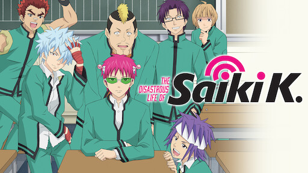Top 4 - Monthly Girls' Nozaki-kun (Gekkan Shoujo Nozaki-kun)
Sinopsis: Chiyo Sakura es una chica que se enamora de Umetarou Nozaki, un famoso mangaka, pero en lugar de recibir una respuesta romántica, se convierte en su asistente en la creación de manga shojo. Con su grupo de excéntricos amigos, las situaciones cómicas no dejan de aparecer.
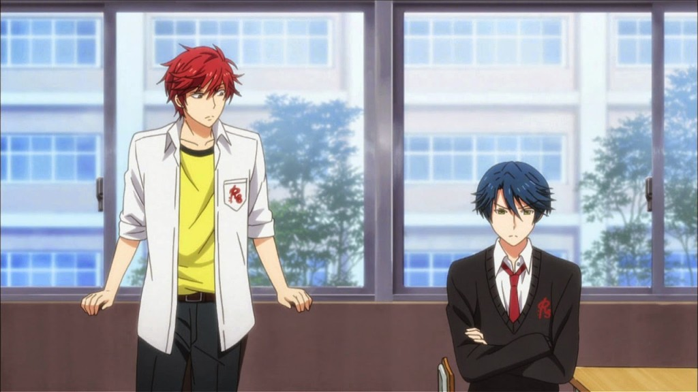Top 3 - Gintama
Sinopsis: Gintama sigue a Gintoki Sakata, un samurái vagabundo en un mundo alternativo donde los alienígenas han invadido Japón. La serie es conocida por su mezcla de comedia absurda, acción y parodias de otros animes.
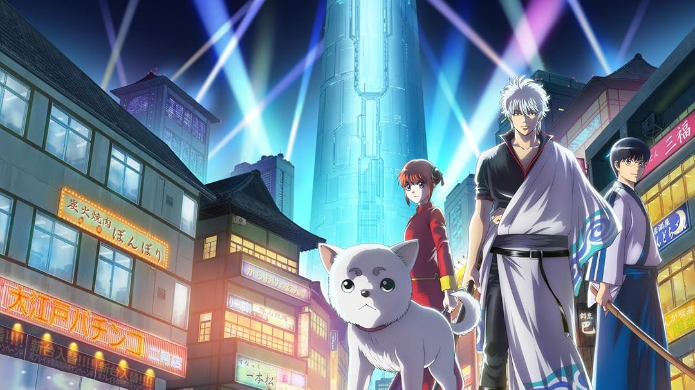Top 2 - One Punch Man
Sinopsis: Saitama es un héroe que puede derrotar a cualquiera con un solo golpe, lo que lo ha dejado aburrido de la vida. Aunque parece una premisa de acción, One Punch Man es un excelente juego de comedia al subvertir las expectativas de lo que debería ser un héroe.
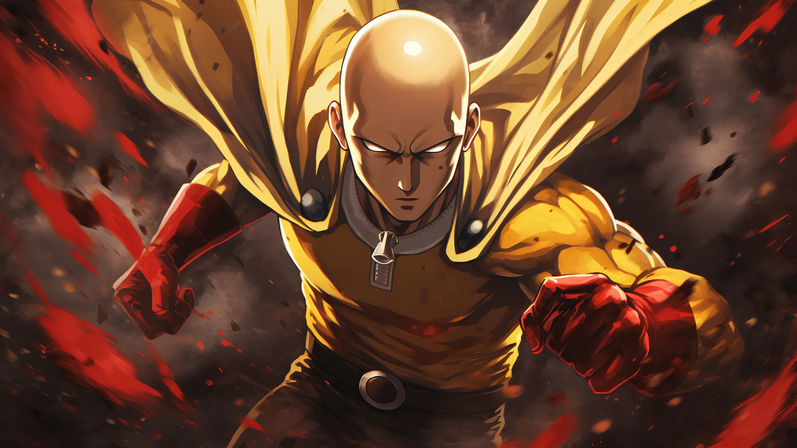Menciones honorificas
Mob Psycho 100
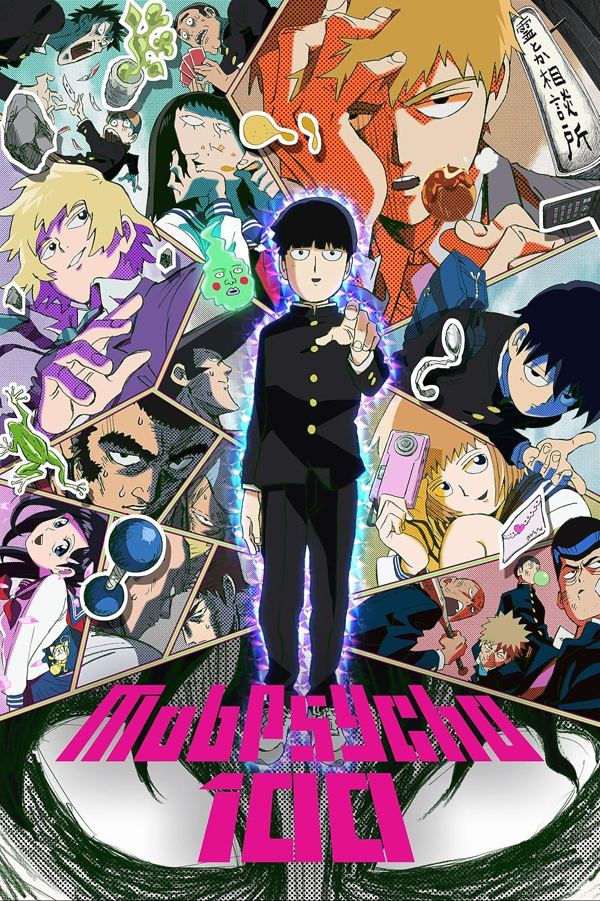Daily Lives of High School Boys
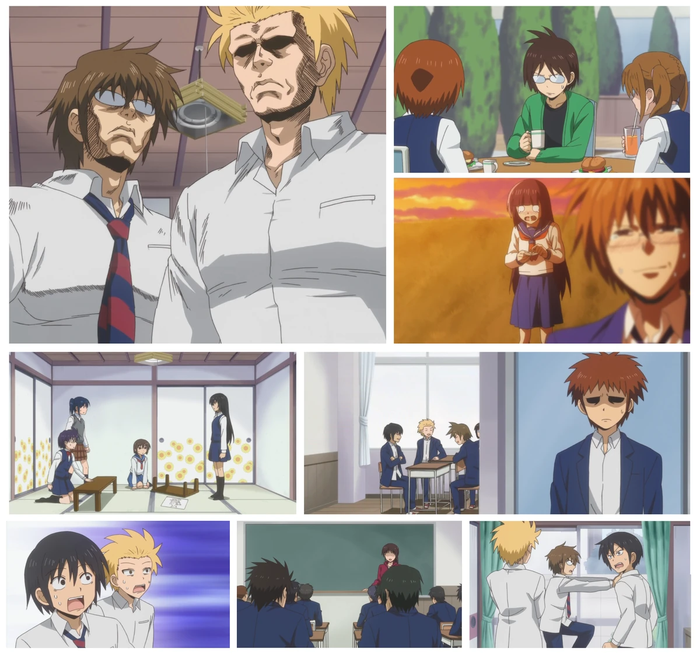Hayate the Combat Butler
Toradora!
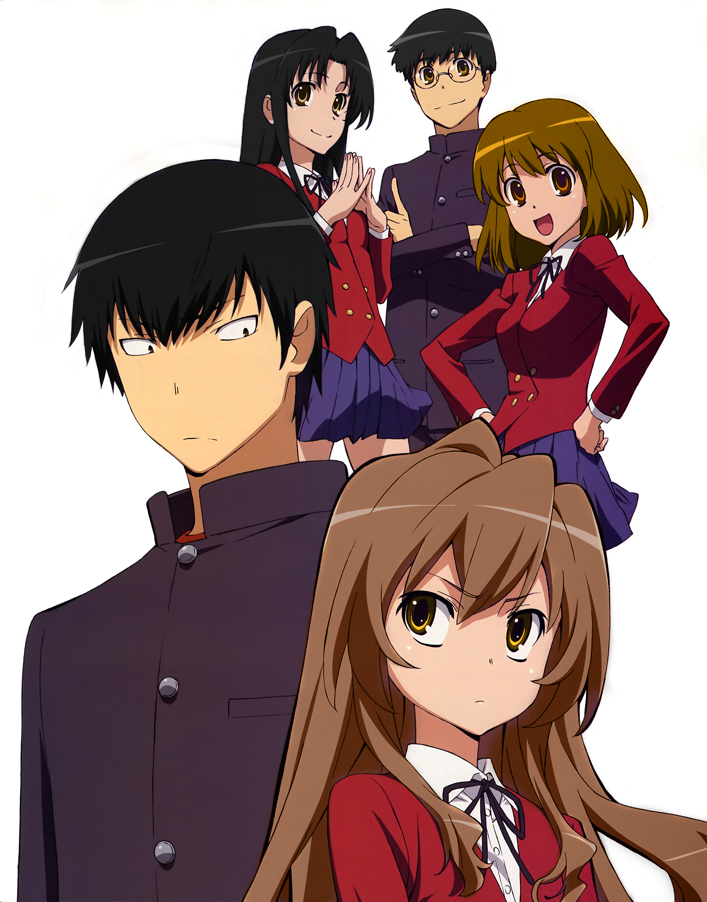The Devil is a Part-Timer!
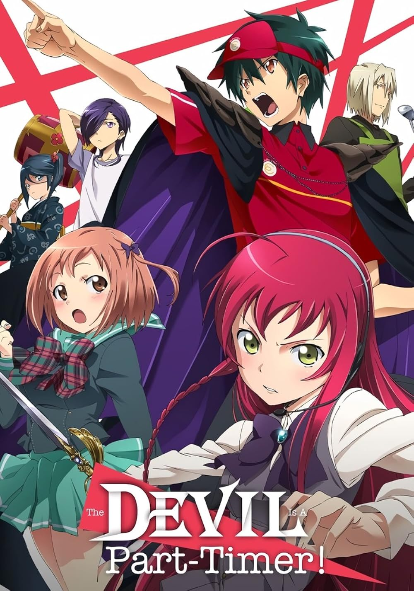Arakawa Under the Bridge
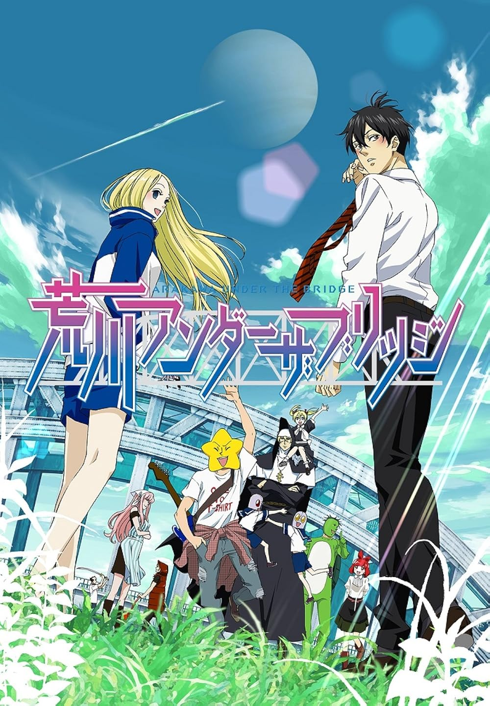Top 1 - Konosuba: God's Blessing on This Wonderful World!
Sinopsis: Kazuma Satou, un joven que muere de manera ridícula, es transportado a un mundo de fantasía. Con la diosa Aqua, la maga Megumin y la sacerdotisa Darkness, forma un equipo que no puede ser más incompetente. A pesar de las situaciones absurdas, este anime está lleno de comedia irreverente y personajes memorables.